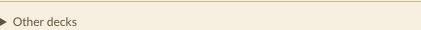
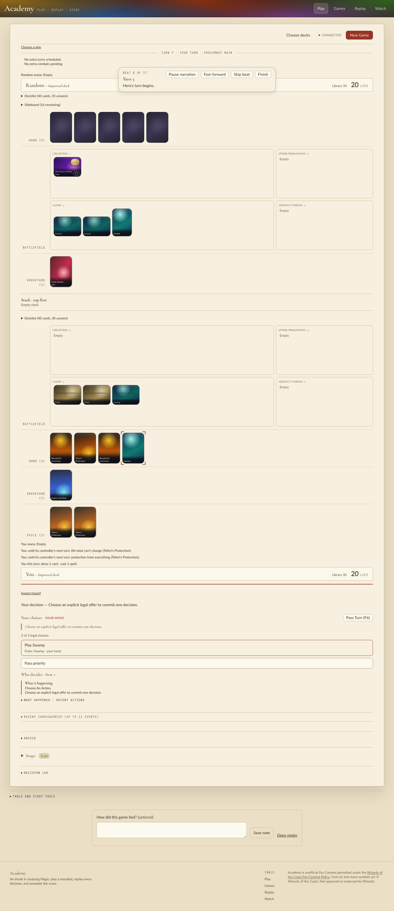

Run on HEAD 9bac1ba1c plus the fixes below, with the cp313 extension rebuilt from the branch (the earlier .so predated the last Rust commit).
I fetched experiments/data/mtg213/corpus-v1/corpus.json through manabot.data fetch with Doppler manabot/prd. SHA256 22f9b2b9…6043, matching the manifest. I then admitted every one of the 1,000 trophy decklists through managym.admit_decklists, one event at a time (scratch/qa/admit.py; per-event receipt in .runs/mtg286-qa/admission.json, unpublished).
admitted 995 of 1000 failures: Heartbeat of Spring 3, Lita, Mechanical Engineer 2; other failures 0 Release to Memory: in no event count mismatches (main+sideboard vs source lines): 0 of 995 admitted events containing bonus-sheet names: 78
Trap: passing the corpus's saved Trophy.decklist object directly gives 134 of 1000. The deserialized Decklist keeps the issues recorded by the world that built the corpus (for example "Lightning Strike: Any target must include planeswalkers"). Admission must re-parse Decklist(trophy.decklist.source, trophy.decklist.filename). This behaviour is on main, not introduced by this branch.
I played 78 random-action games with the 78 admitted bonus-sheet corpus decks (14,611 steps, all finished, no engine exception). I encoded every position with the Python v9 and v10 encoders and rendered the LLM text decision every seventh step (scratch/qa/play.py).
managym/decision_capture.py::ManaCost gains x; _mana renders {X}; native ManaCost exposes x (bindings.rs, .pyi). Test: test_x_cost_definition_renders_its_x. A definition now reads "Black Sun's Zenith. Sorcery; cost {X}{B}{B}".I ran ./scripts/play --port 8286 --frontend-port 5286 and drove it with headless Playwright. I opened "Import decklist files", uploaded a W/B bonus deck (Black Sun's Zenith, Teferi's Protection, Bloodchief Ascension, Empty City Ruse, Drannith Magistrate, Scout's Warning) and a corpus villain deck, pressed Check decklists ("Ready — development-v1, w17") and then New Game. I played several games against Search 64 and one 45-turn game against Random.

Seen on the table:
There were no console or page errors.

Fixed: Academy vitest failed 1 of 127 (protocol-conformance). The TypeScript CardState declared from_battlefield_this_turn, which the projection never sends and no schema lists. I removed the declaration: vitest now passes 127 of 127, and svelte-check reports 0 errors.
semantic_viewer_input doesn't account for the revealed hand._STAGES.CardMana) carries no x. The definition line does.